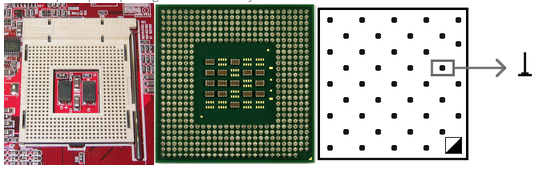
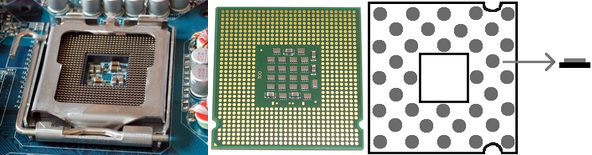
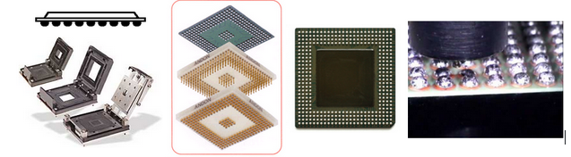

Encapsulados¶
Más allá del tipo de socket o ranura que se utilice, es esencial que el procesador se inerte con suavidad para que no se doble ninguna clavija (existen cientos de ellas). Para insertarlos con mayor facilidad, se ha creado un concepto llamado ZIF (Fuerza de inserción nula). Los sockets ZIF poseen una pequeña palanca que, cuando se levanta, permite insertar el procesador sin aplicar presión. Al bajarse, ésta mantiene el procesador en su lugar. Generalmente distinguimos tres tipos de conexión:
PGA: Pin Grid Array: La conexión se realiza mediante pequeños alambres metálicos repartidos a lo largo de la base del procesador introduciéndose en la placa base mediante unos pequeños agujeros, al introducir el procesador, una palanca anclará los pines para que haga buen contacto y no se suelten.
Como se muestra en figura estos zócalos llevan una de sus esquinas diferenciada para la correcta colocación del procesador.
Los procesadores de ADM, de momento, siguen empleando los tradicionales pines. Este sistema ha sido el empleado por todos hasta que INTEL sacó otros contactos en sus 775.Este sistema es algo más delicado de manipular por la posibilidad de doblar o romper un pin, para ensamblarlo primero abriremos el seguro (palanquilla) del zócalo, sacamos con mucho cuidado el microprocesador de su estuche, sujetándolo por los bordes, y lo colocamos en el zócalo. Debe entrar sin hacer ninguna presión ni, por supuesto, forzarlo. Una vez en su correcta posición, ejercemos una ligera presión sobre el microprocesador y cerramos la palanquilla.
LGA: Land Grid Array: La conexión se realiza mediante superficies de contacto lisas con pequeños pines que incluye la placa base. Como mostramos en la siguiente figura, estos microprocesadores llevan unas muescas en los laterales que deben coincidir con las guías del zócalo.
BGA: Ball Grid Array: La conexión se realiza mediante bolas soldadas al procesador que hacen contacto con el zócalo.
